0. Intro
- 문제 번호 : Q5-7 (3문제)
- 답변 준비 시간 : 각 3초
- 답변시간
* 5, 6번 : 15초
* 7번 : 30초- 참고영상
1. 만점 전략
(1) 문제는 내 친구
문제를 참조해서 답변으로 바꾸어 읽기
의문사 만능공식을 활용해 답변형식으로 변형하자.
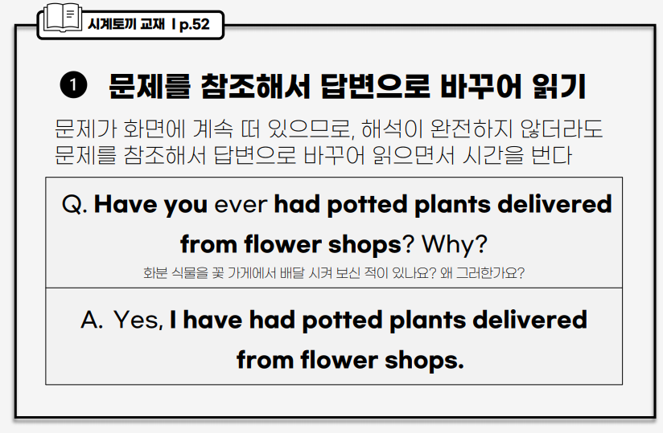
(2) 어렵게 말하기 X
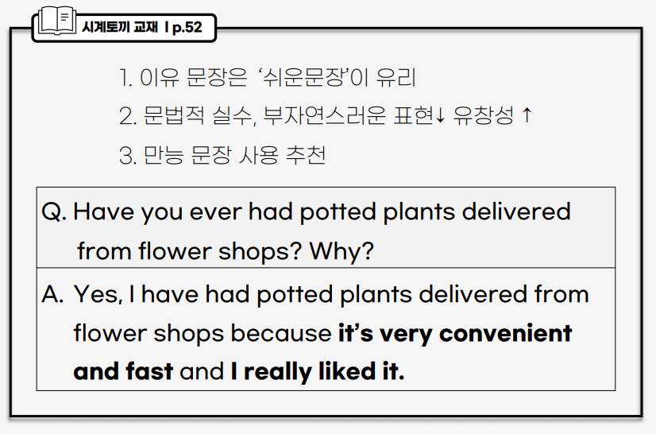
(3) 진짜 ‘내 얘기’ x
- 만능 답변 등을 이용한 쉬운 답변 이용
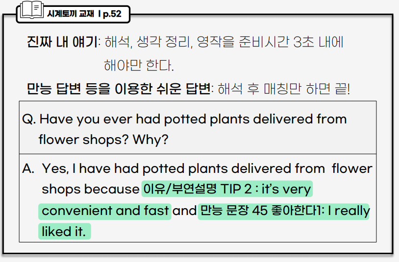
(4) 답변의 70% 미리준비
의문사 만능동식 6개
부연설명 쉽게 만드는 팁 2개
만능 문장 50개
(5) 가급적 Yes로 대답
- 5번 문항에서 부정적으로 답변하면 뒤에 6, 7번에서 동일 주제에 대한 문제가 연속으로 나오기 때문에 뒤에서 답변하는데 약간의 차질이 생길 수 있음
2. 기초이론다지기
- 참고영상
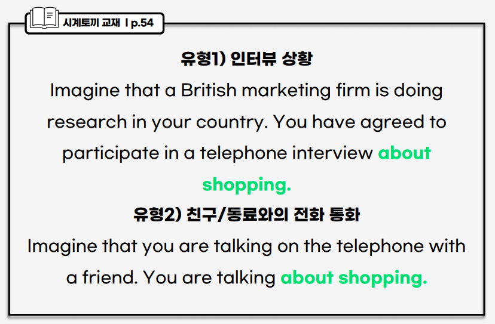
문제 유형에 신경쓰지말고
about뒈에 주제만 확인하자.주제만 미리 확인하고 준비 시간을 가지자.
3. 의문사 만능공식
(1) Who
Q. Who do you usually go with when you go to a cafe?
A. I usually go with my friend when I go to a cafe
(2) Where
(2)-1. 어디서 사니?
(where do you buy ~?)
- On the Internet
- At a shopping mall
- At a department store 백화점
Q. where do you buy (purchase) clothes?
A. I usually buy cloths on the Internet.
(2)-2. 어디서 하니
(Where do you usually play ~?)
- at home/school
- on a subway
Q. where do you usually play mobile game?
A. I usually play mobile game at home/school/on a subway.
(2)-3. 어디서 정보를 얻니?
(Where do you get information ~ ?)
- on the internet
Q. Where do you get information about where to buy home cleaning products?
A. I usually get information about where to buy home cleaning products on the Internet.
(3) When
(3)-1. 보통 언제 하니
(When do you usually~?)
- When I have spare time(빈출)
- on weekends / in 계절
Q. When do you usually visit museums?
A. I usually visit museums when I have spare time.
(3)-2. 언제 했니?, 언제 마지막으로 했니?
(When did you) ~ ? \(\to\) two weeks ago / yesterday / last year * When was the last time you 과거동사? \(\to\) The last time I 과거동사 was two weeks ago.
Q. When was the last time you went to a park?
A. The last time I went to a park was two weeks ago
cf. When did you last go to a park?
A. I last went to a park two weeks ago
(3)-3. 하루 중 언제 하니?
(What time of the day do you usually~?)
- in the moring/evening
- 답변 만능 문장
- It’s part of my routine. 내 일과 중 일부이다.
- It’s less crowded in the morning. 아침에 덜 붐빈다.
Q. What time of the day do you usually go to the movies?
A. I usually go to the movies in the morning. because it’s less crowded in the morning.
(3)-4. 일 년 중에 언제 하니?
(what time of the year~?)
- in 계절
- what time of the year do you read books most?
A. I read books in winter most.
(4) How
(4)-1. 얼마나 자주
(How often, How frequently, How many times~?) \(\to\) 빈출
- twice a week 일주일에 두 번
- almost every day 거의 매일
- once in a while 가끔씩
Q. How often do you shop for cloths?
A. I shop for cloths twice a week / almost every day / once in a while.
(4)-2. 얼마나 오래
(How long have you p.p~?) \(\to\) 빈출
- I have p.p + for 기간(5 minutes / 2 hours / a year)
Q. How long have you lived in your current neighborhood?
A. I have lived in my current neighborhood for 3 years.
(4)-3. V 하는데에 얼마가 걸리니?
(How long does it take 사람 to V?)
- It takes 기간 (for 목적어) to V
Q. How long does it take you to finish a book?
A. It takes 3 hours for me to finish a book.
(4)-4. 얼마나 오래 시간을 보내니?
(How much time do you spend~?) \(\to\) 빈출
- I spend minutes / hours / days
Q. How much time do you spend surfing the Internet every day?
A. I spend 3 hours surfing the Internet every day.
(4)-5. 얼마나 멀리 있니?
(How far)
- about 10 minutes away
Q. How far is the closest bank from where you live?
A. The closet bank from where I live is about 10 minutes away.
(4)-6. 가격이 얼마니?
(How much~?)
- about 20 dollars
Q. How much do you usually spend when you go to a restaurant with your friends?
A. I usually spend about 20 dollars when I go to a restaurant with my friends.
(4)-7. 몇 개니?
(How many~?)
Q. How many bookstores are there in your town?
A. There are two bookstores in my town.
(4)-8. 이동 수단
(How do you get to ~?)
Q. How do you usually get to school?
A. I usually get to school by bus.
(5) What
(What kind / type / sort / genre of N) \(\to\) 빈출
- K-pop / Fiction / action movies
Q. What kind of social media do people in your company normally use?
A. People in my country normally use Instagram.
~해본적 있니?
(Have you ever p.p~?)
- Yes, I have p.p / No, I haven’t p.p
Q. Have you ever used a photo-editing software to imporve your picture images?
A. Yes, I have used a photo-editing software to improve my picture images.
4. 이유 문장/ 부연설명 쉽게 만드는 TIP
(1). 매우 좋아한다.
- I like/love N very much.\(\to\) 빈출
Q. who do you usually go with when you shop for clothes?
A. I usually go with my friends when I shop for clothes / because we like shopping very much.
(2). 형용사로 표현
- 쉽고 간결하며 더 좋은 점수를 받을 수 있음
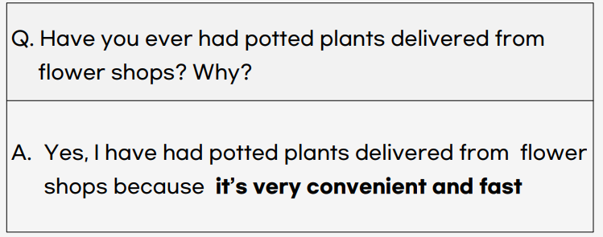
(2)-1. It’s very + 형용사 (빈출)
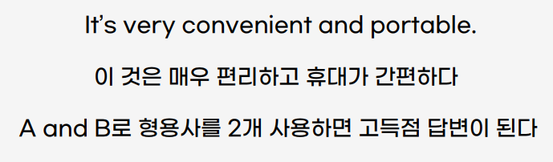
(2)-2. 비교급
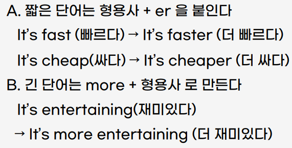
(2)-3. 유용하고 간편하게 쓸 수 있는 형용사
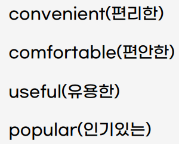
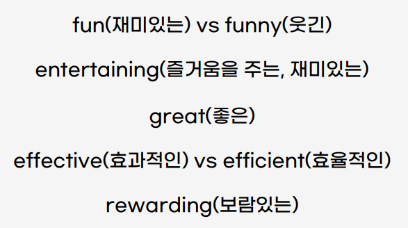
(2)-4. 비교급 주의
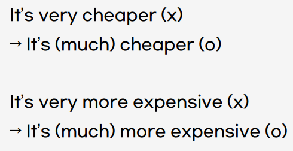
(2)-5. 빈출 예시
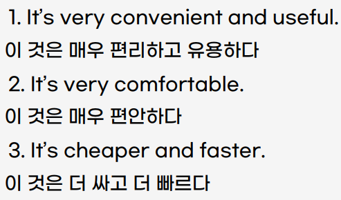
(2)-6. 문장 연결어
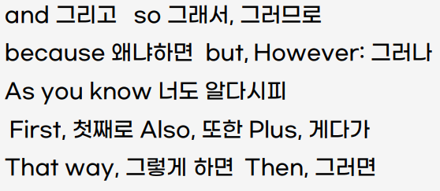
4. 실전연습
- 참고영상
set1. 해외여행
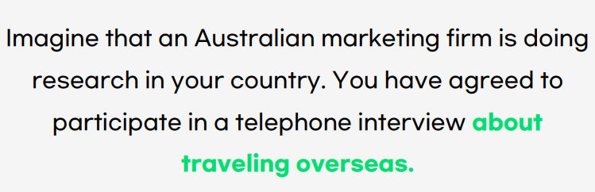
Q5. when was the last time you traveled overseas and what is your favorite places?
answer
The last time I traveld overseas was last year, and my favorite places is canda.
Q6. What kind of activities do you enjoy when traveling overseas?
answer
I enjoy shopping when traveling overseas because it’s favorite thing to do and it makes me happy.
Q7. Which of the following activity do you think is the most important when you travel overseas?
- Learning local languages, - Visiting historical spot, - Meeting local people
A1. 기본형
I think meeting local people is the most important when I travel overseas.
First, I can meet foregin people and make new friends.
Also, I can get a lot of useful information from these new friends(local people, them).
Therefore, I think this way.
A2. 과거형
I think meeting local people is the most important when I travel overseas.
because, I can meet foregin people and make new friends.
Last year, I traveled overseas and I met local people. I really liked it. It was awesome!
because, I was able to meet foreign people and make new friends
set2. 기부

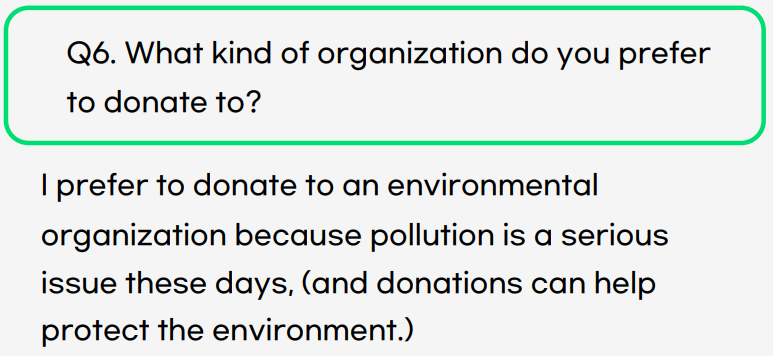
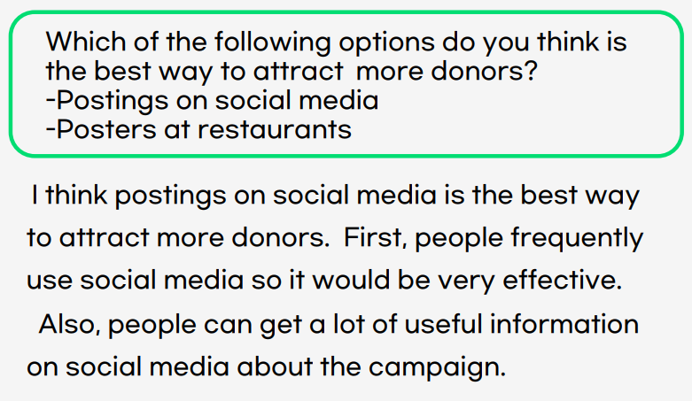
set3. 거주지
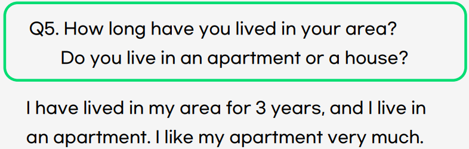
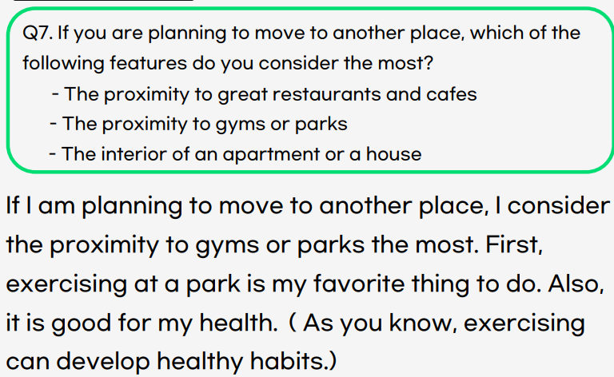
set4. 놀이공원
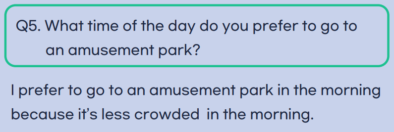
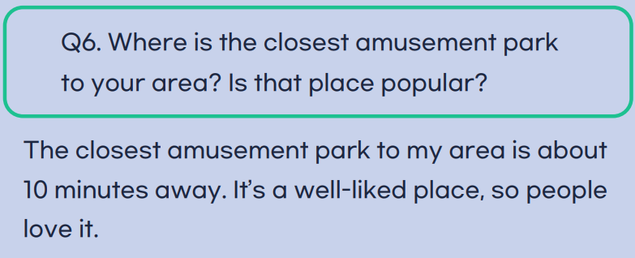
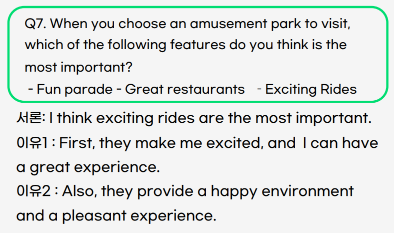
set5. 악기수업
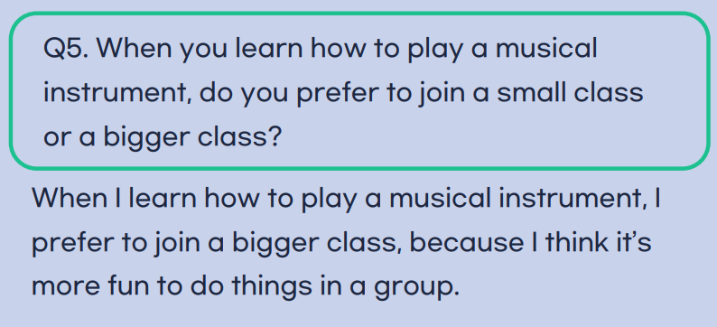
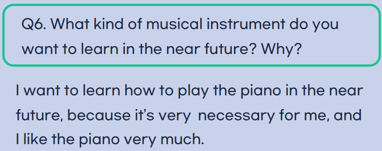
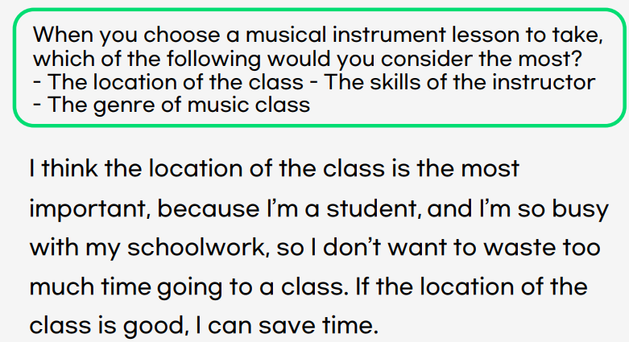
set11. 운동기구
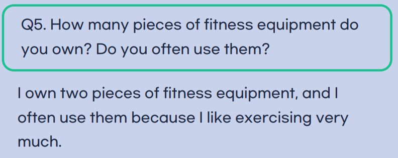
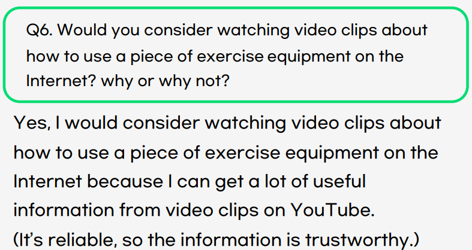
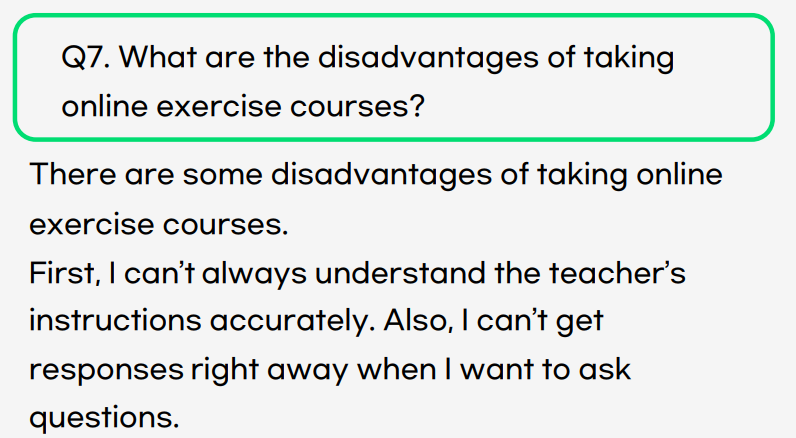
set14. 호텔
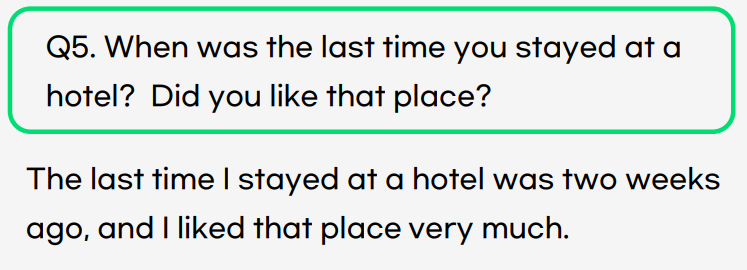
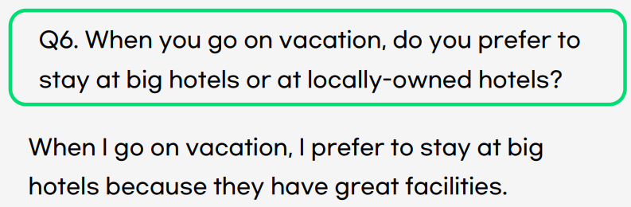
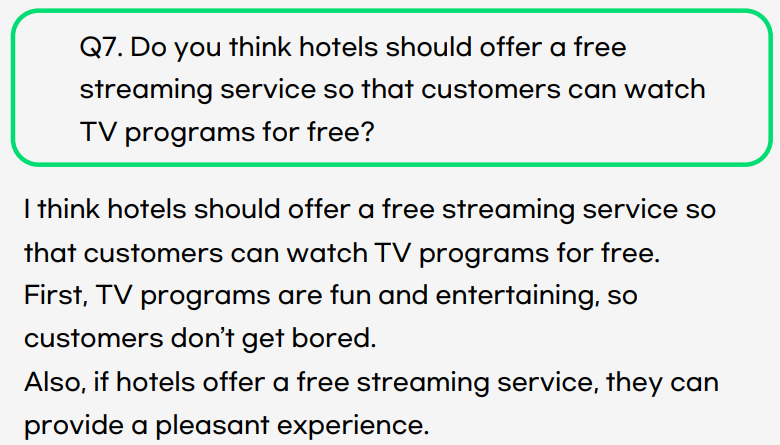